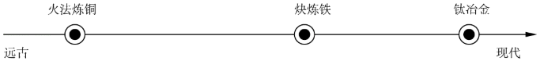
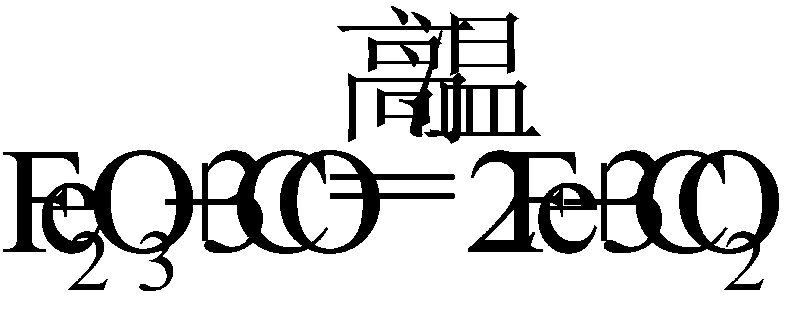
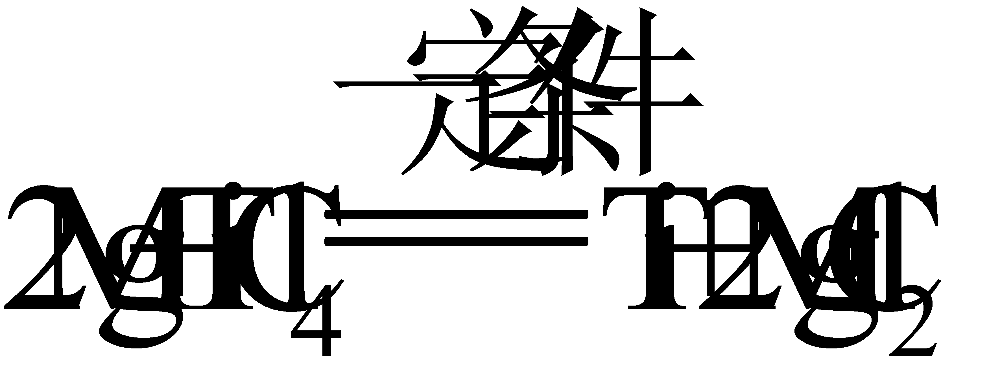
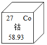

2021年北京市中考化学真题 · 选择题 第16、17、18、19、20题
我国冶炼金属的历史悠久、回答问题。

16. 远古时期火法炼铜的原料是孔雀石【主要成分为Cu2（OH）2CO3】，组成Cu2（OH）2CO3的元素种类为
A. 3种B. 4种C. 5种D. 6种
17. 块炼铁以炭和铁矿石为原料，反应之一为

，该反应中，化合价降低的元素是A. 铁元素B. 碳元素C. 氧元素D. 铁元素和碳元素
18. 冶炼钛（Ti）的反应之一为

，该反应属于A. 化合反应B. 分解反应C. 置换反应D. 复分解反应
制作景泰蓝的釉料中常含钴元素。钴元素在元素周期表中的信息如下图。回答问题。

19. 下列有关钴元素的说法不正确的是
A. 原子序数是27B. 属于非金属元素
C. 元素符号是CoD. 相对原子质量为58.93
20. 钴原子的核外电子数是
A. 27B. 32C. 59D. 86
用MgCl2溶液喷洒路面可融雪、防尘。20℃时，按下表数据配制溶液，回答问题。
序号 | ① | ② | ③ | ④ |
MgCl2的质量/g | 30 | 40 | 50 | 60 |
水 质量/g 质量/g | 100 | 100 | 100 | 100 |
（已知：20℃时，MgCl2的溶解度为54.6g）